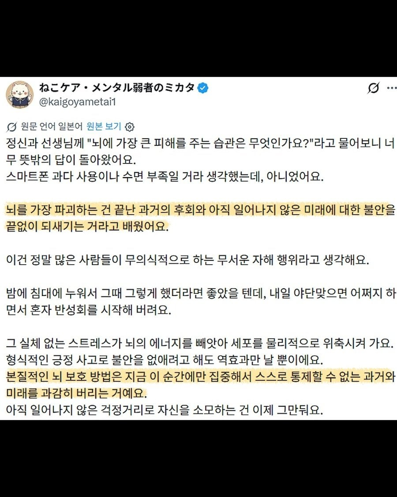
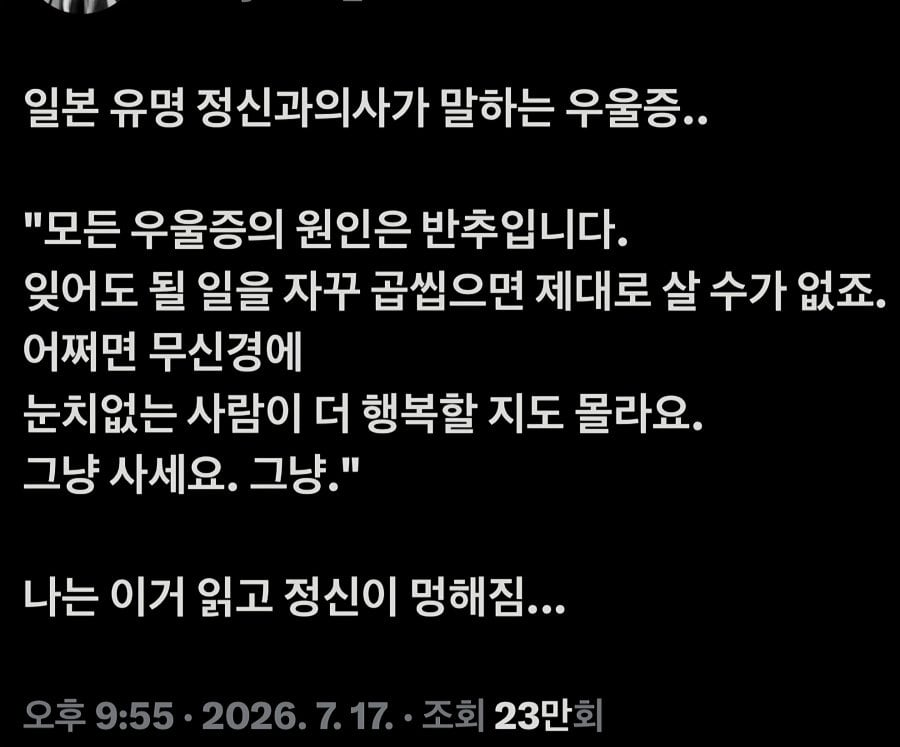

일어나지않는일로 쓸데없이 걱정하는거


일어나지않는일로 쓸데없이 걱정하는거
대부분의 헛소리는 일본발이어서 안믿음
내가 원래 저렇게 쓸데 없는 고민 많이 했었는데 이젠 안 함 매일 소주 3병씩 마시니까 해결 되더라고
....??
뇌에 치명적인 건
1. 고혈압
2. 운동부족
3. 수면부족
4. 흡연
5. 과음
6. 비만 + 좋지 않은 식습관
7. 사회적 고립과 인지 자극 부족
7번 빼고 전부인데 조졌네
운동하면 1 2 3 6 한번에 날릴수있음
그래서 우울증 있는 사람이 치매 올 확률이 높다더라
시한부, 질병으로 인한 극심 고통, 치매 이 3가지는 하루빨리 안락사 도입이 됐으면 좋겠다
후회스러운 과거를 가진데에 뇌까지 망가지다니 ㅠㅠㅠ
곱씹기 장인인데 조졌네
매일밤 누군갈 죽이는 상상하늨 나자신 칭챀햐
내가 그래서 스트레스가 없음ㅋ근데 주변사람들은 나때문에 스트레스 받음ㅋㅋ
미안한데 이런애들 제일 속터지더라. 밑에쪽에선 낭~창 하다고 부름
한국이 자살율 높은게 생각없이 살려고 해도 옆에서 오만 간섭하고 비교질 줄세우기 해서 그냥 생각없이 살기가 힘들지
저거 근데 진짜임
나도 공황장애왔을때 과거 후회+미래 불안 하루종일 하다보니 어느순간 갑자기 공황장애옴
일어나지 않은 일은 상상하지 않고 이미 일어난 일은 되돌릴 수 없기에 흘려보내야함
이거 완전 주식
이거 완전 나네. 이전 글에 우울증 환자의 머릿속도 내 얘기고..
스트레스가 장시간 가면 컴퓨터 계속 오버클럭 돌리는거랑 마찬가지라 기능 하나씩 빠꾸나지 틀린말 아님
저거 심해지면 어떻게 되는 줄 아냐? 강박 장애 옴. 나도 불안도가 높아서 몇년에 한번씩 강박증상 세게 오는데, 그때마다 정신과 가서 약먹으면서 몇달은 고생함 진짜로...걱정 하지 말자~ 이게 안되는 상태가 되어버림. 그냥 뇌가 ㅈㄴ 세게 고장나, 일상생활도 안됨
아직발생하지않는 일로 스트레스받는게 제일 좆같은거지
나는 일어날까봐 걱정되던 일들은 반드시 일어나던데 어떡함? 그래서 맨날 제발 내가 오바하는 거였으면 좋겠다고 생각함
그정도면 무당을하셈
나도 좀 그런경향 있어서 염세주의 된 듯.
나 이얘기 듣고 기분잡쳤어 오빠
그래서 바보가 행복함. 무던하고 무신경한 애들이 건강하게 장수함
이건 주변 사람도 힘들게 함
쉽지않음